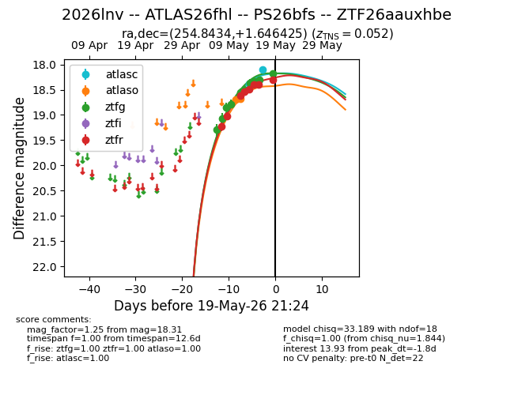
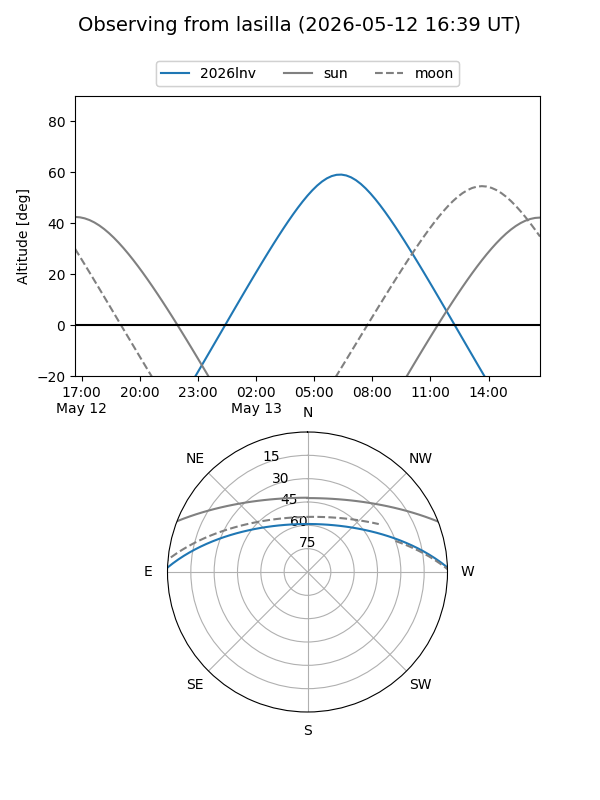
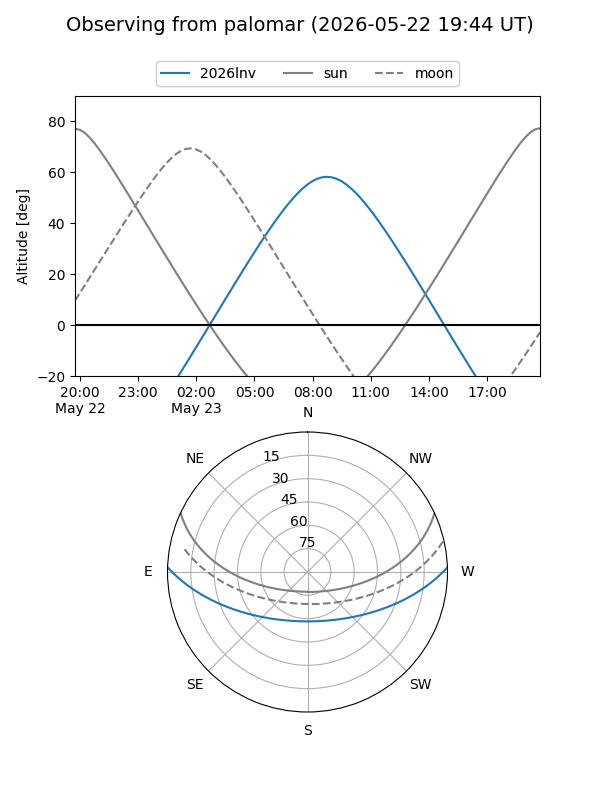
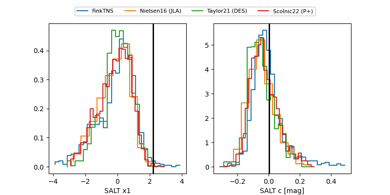

2026lnv
Target 2026lnv at 2026-05-19 21:26
Aliases and brokers:
FINK: link
Lasair: link
ALeRCE: link
TNS: link
YSE: link
alt names
ZTF26aauxhbe (ztf,fink_ztf)
2026lnv (tns,yse)
ATLAS26fhl (atlas)
PS26bfs (panstarrs)
Coordinates:
equatorial (ra, dec) = 254.8434,+1.64642
equatorial (HMS+DMS) = 16:59:22.43,+01:38:47.13
galactic (l, b) = (20.8727,+25.52930)
Flags:
confirmed ia
Photometry:
last atlasc=18.10, atlaso=18.68, ztfg=18.18, ztfr=18.31
2 atlasc, 2 atlaso, 10 ztfg, 8 ztfr detections
Lightcurve

Visibility


Additional plots
